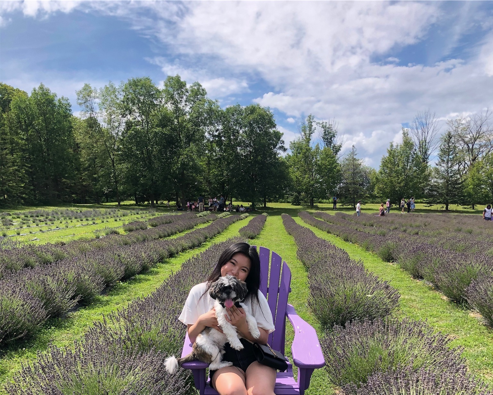

HELLO,
ABOUT ME
Hi, I'm Erica!
I'm a student at Wilfrid Laurier University pursuing a bachelor's degree in User Experience Design.
As a design students, I'm always open and interested in learning new approaches/perspectives to
things
such as user-centred research methods and tools. I love how design can spark conversations
and
meaningful messages to connect communities and cultures. While pursuing my user experience
degree at Laurier,
I've had numerous opportunities to meet and work with amazing people who have
taught me a lot of new
and valuable skills. Working in teams had definitely broadened my understanding
of the world of UX.
PORTFOLIO
Study Lock
Due to COVID-19, students have been struggling to focus and complete their tasks on time.
For this Reason, "Study Lock" is a great app that can strongly benefit students through
these tough times. Personally, I have been procrastinating a lot, and I think this app would
would be a great resource for me to stay on top of my things and be more organized. For instance
students can start a timer and set the duration according to how long they want to study for. Once
the
timer is activated, their phones will be fully locked until the timer goes off which will give
students less
of an urge to go on their phones.
Cardboard Boxes
For this project, my group thought of a way to effectively reuse large cardboard boxes since
they are usually
discarded after we unbox our package. We came up with a great idea to reuse
cardboard boxes and turn it
into a creative project, something that children can play with. To do so,
each cardboard box will come
with a QR code, and by scanning it, users will obtain a instruction guide on
how to successfully build
the box. Children can put their hands-on ability to the test and this
also serves as a great chance for
children to strengthen their bonds with their parents since it they can work on it together.
UX Through Tiktok
The UX industry has been growing drastically over the years, and more people are curious with what you can
do with it. This app is quick and easy to use, making it ideal for users who are new to user experience and want
to learn more about it.
This app will cover a ton of UX topics such as the courses needed, their responsibilities,
their day to day life,
and their salary. Tiktok is such a big platform and more convenient for people from
around the world to see the potentials of UX.
Overall, our project will solve the hassle of researching about
this career, therefore, making it easier for people who are seeking opportunities
or want to gain more
knowledge about this field.
Artista
For this project, my group created "Artista", an app that we made for amateur artists to plan their performances
in a convenient way. Artists/musicians can easily reach out to other artists to collab, and reach out to agents for
assistance. Not only will it create a profile for you, but it also will provide you suggestions with different types
of performances that you can choose from. Overall, this app is very useful and convenient for artists to reach out
to
each other since they can view each others profiles beforehand and determine whether or not they are a good fit.
SKILLS
Graphic Design
Practiced the art of communication, styling, and problem-solving through the use of typography, composition, and images.
UX Design
Had many opportunities to work on various projects that focused on user testing and user experience. Achieved this through research and prototypes from low-fidelity to high-fidelity.
HTML/CSS
Have some experience in HTML, CSS, and Javascript to create simple functional websites.